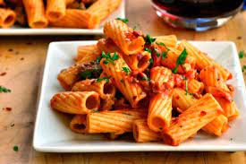

Recipe: Rigatoni in Spicy Rose Sauce

Description
This rose sauce is creamy with a bit of a kick. It has the right amount of meatiness and saltiness that pairs especially well with a perfectly cooked rigatoni. This meal can be completed in under 45 minutes and is an easy way to create a home made sauce without the hassle of everything from scratch.
Ingredients
- 1 tbsp Olive Oil
- 16 oz of Rigatoni
- 1/2 Red Onion Chopped
- 4 cloves of Garlic minced
- 1 lb of Spicy Italian Sausage, removed from casings
- 1 16 oz can of Crushed Tomatoes
- 1 16 oz can of Tomato Sauce
- 1 tbsp 21 spice seasoning
- 2 tsp Oregano
- 1 tsp black pepper
- 1 tsp salt
- 2 tsp crushed red pepper
- 4 oz of half and half
- Grated Parmesean cheese
Directions
- Boil 4 qts of water and cook Rigatoni according to package (12-14 min)
- In a saucepan add Olive Oil and put on medium heat. Once heated up add onions and sweat the onions about 1 minute
- Add in sausage that has been removed from casing. Break up sausage using a wooden spoon. Cook for 8-9 minutes or until brown. With about 1 minute remaining in cooking of sausage add in minced garlic and mix around sausage, onions and garlic
- Add in Crushed Tomatoes Can, Tomato Sauce Can, 21 spice seasoning, Oregano, Black Pepper, Salt, Crushed Red Pepper. Mix everything well and stir occasionally until sauce starts simmering
- Once sauce starts simmering lower heat to low-medium (~4/10) and add in half and half. Mix well and continue to occasionally stir.
- Drain Rigatoni retaining 1tbsp of the pasta water with the pasta
- Add drained rigatoni into the sauce and coat well
- Serve on plate and add grated parmesean cheese for taste. Enjoy with a nice bold red wine!
Home
Recipe 2: Chicken Makhani
Recipe 3: Chicken w/Broccoli